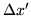
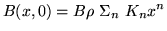
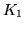
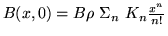

angles in degrees except for  and for the kicksAlso, the "utransport" keyword has implications for the field expansion coefficients.
lengths in meters
energy in GeV
momentum in GeV/c
electromotive force in kiloVolts
frequency in Hz
field expansion is 
positive  is horizontally focussing
The keyword ustandard indicates that the input has the following units
angles in radians
lengths in meters
energy in GeV
momentum in GeV/c
electromotive force in MegaVolts
frequency in MegaHertz
field expansion is 
positive is horizontally focussing